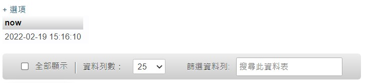
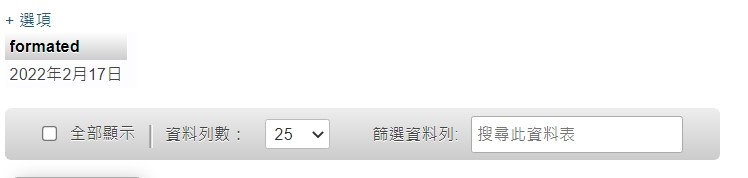
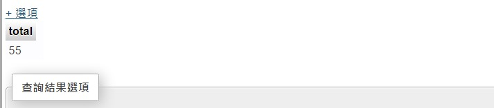
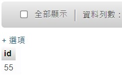
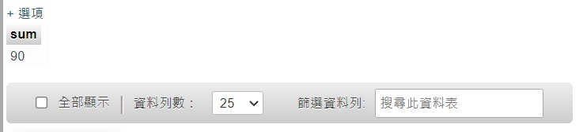
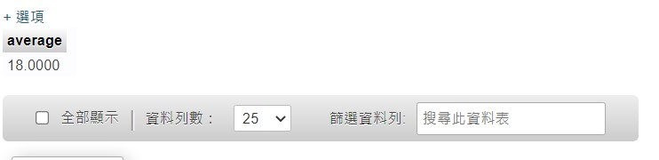
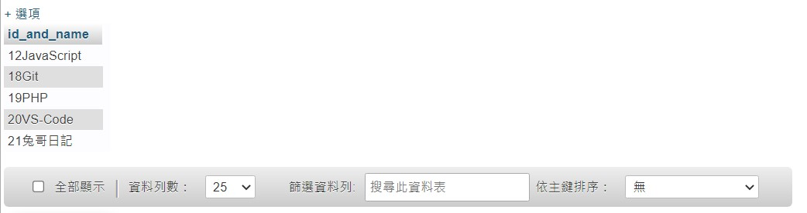

把我覺得不錯用的記下來。
取得目前時間
1 | SELECT NOW() AS now; |

設定日期格式
我最常用 X年X月X日 的格式來輸出，所以這邊拿這個舉例：
1 | SELECT DATE_FORMAT('2022-02-17 23:29:16', '%Y年%c月%e日') AS formated; |

順便附上用 PHP 的寫法：
1 | $date = '2022-02-17 23:29:16'; |
更多的格式語法可以參考這裡。
計算欄位總數
備註：COUNT() 裡面放要計算的 column。
這邊是計算沒被刪除的文章數量：
1 | SELECT COUNT(posts.id) AS total FROM posts WHERE posts.is_deleted = 0; |

找出欄位的最大值
備註：MAX() 裡面放要計算的 column。
這邊是找出 id 最大的欄位：
1 | SELECT MAX(id) AS id FROM todos; |

計算總和
這邊是把所有 id 加總結果：
附註：12 + 18 + 19 + 20 + 21
1 | SELECT SUM(categories.id) AS sum FROM `categories`; |

計算平均值
這邊是把所有 id 加總後的平均值：
附註：90 / 5
1 | SELECT AVG(categories.id) AS average FROM `categories` |

把多欄合併成一欄
這邊是把 id 和 name 給合併成一個欄位：
1 | SELECT CONCAT(categories.id, categories.name) AS id_and_name FROM `categories`; |
